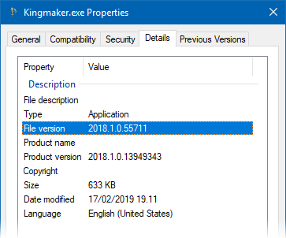

Installing BepInEx
Requirements
- Supported Operating Systems
- Supported Unity games
- Unity 4 or newer
- The game has to use Mono as the scripting backend. More info in limitations section.
Important
Games built with IL2CPP are not supported!
For more information, read the whole explanation in the limitations section.
Where to download BepInEx
BepInEx is distributed in two builds: stable and bleeding edge.
Stable builds are available on GitHub.
Stable builds are released once a new iteration of BepInEx is considered feature-complete. They have the least bugs, but some newest features might not be available. It is recommended to use stable builds in most cases.
Bleeding edge builds are available on BepisBuilds page.
Bleeding edge builds are always the latest builds of the source code. Thus they are the opposite to stable builds: they have the newest features and bugfixes available, but usually tend to be the most buggy. Therefore you should use bleeding edge builds only if you are asked to or if you want to preview the upcoming version of BepInEx.
Installing BepInEx
BepInEx can be installed in two ways: via the installer tool or manually.
Download the correct version of BepInEx.
Download BepInEx from one of the available sources.
In the download section, all BepInEx distributions are designated using the following naming convention:BepInEx_<unityVersion>_<arch>_<build>_<version>.zipEach value has different options depending on the game and your OS:
<unityVersion>-- Version of the Unity that the version supports. Has the following values:Legacy: Supports games made in Unity 2017 and earlier.v2018: Supports games made in Unity 2018 and later.
arch-- The OS and architecture this BepInEx was built against. Has the following values:x86: For computers running 32-bit Windows.x64: For computers running 64-bit Windows.Patcher: For computers running Linux, macOS and other non-Windows systems.
build-- Only in bleeding edge builds. Specifies the exact commit BepInEx was built against.version-- Exact version of BepInEx.
Note
If you are not sure which Unity version the game runs on, you can check it by right-clicking the game executable and select
Properties -> Detailsthe file version:
Extract the contents into the game root.
After you have downloaded the correct game version, extact the archive into the game folder where the game exectuable is located (so called game root folder).
Only for
Patcherbuilds: Run the patcher.If you have downloaded and installed the
Patcherbuild, runBepInEx.Patcher.exewhich will permanently patch the game to run BepInEx.Note
If you are using a non-Windows system, you might need to run the patcher via mono:
mono BepInEx.Patcher.exe

Next: Installing plugins and configuration.
After you're done installing BepInEx, you can start installing and using plugins. Simply put plugins into BepInEx/plugins folder in the game folder and you're good to go.
Additionally, you might want to configure plugins and BepInEx itself. For that, please refer to the configuration guide.